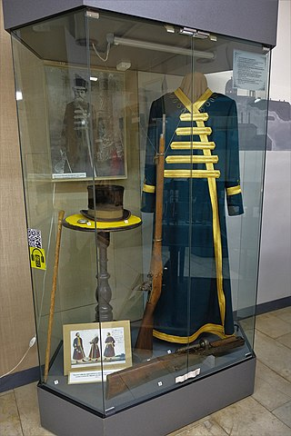
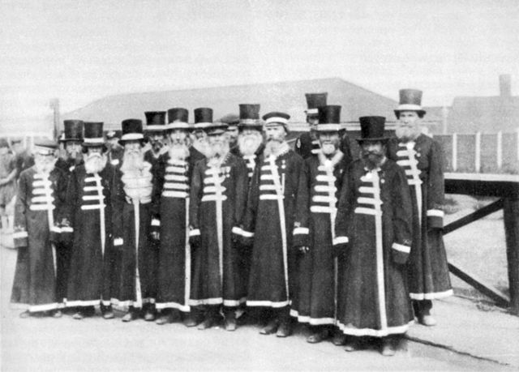

Памятник крокодилу — произведение постмодернизма, расположенное в центре города Ижевска.
Памятник представляет собой двухметровую статую антропоморфного крокодила во фраке, шляпе-цилиндре и галстуке-бабочке, непринуждённо (руки раскинуты, нога на ногу) расположившуюся в середине чугунной скамьи. На её брусьях вырезаны имена людей, причастных к созданию памятника.
Скульптура отлита из чугуна на заводе железобетонных конструкций в городе Чайковском. Макет создал студент Удмуртского Государственного Университета Асен Сафиуллин, отливал скульптор Павел Медведев. Концепцию памятника разрабатывал историк и культуролог Игорь Кобзев, финансировал сооружение памятника ЗАО «НПО Электромаш».
Установить памятник предполагалось в центральной части города, в районе улиц Пушкинской или Советской. В итоге выбор пал на пересечение Советской и Коммунаров, рядом с гимназией № 24.
Предполагалось открыть памятник ко дню города 12 июня. Однако открытие состоялось 17 сентября 2005 года в рамках Сетевого марафона «Культурная столица Поволжья». На церемонии «отцом» крокодила был провозглашён заместитель главы Администрации Ижевска Серегей Протозанов, а «матерью» — директор гимназии № 24.
В 2006 году в школе № 24 был создан музей крокодила. В 2007 году было отпраздновано двухлетие памятника. В настоящее время памятник пользуется популярностью у свадебных кортежей.
|  |  |
| Наградной кафтан оружейника | Ижевские оружейники-кафтанщики |